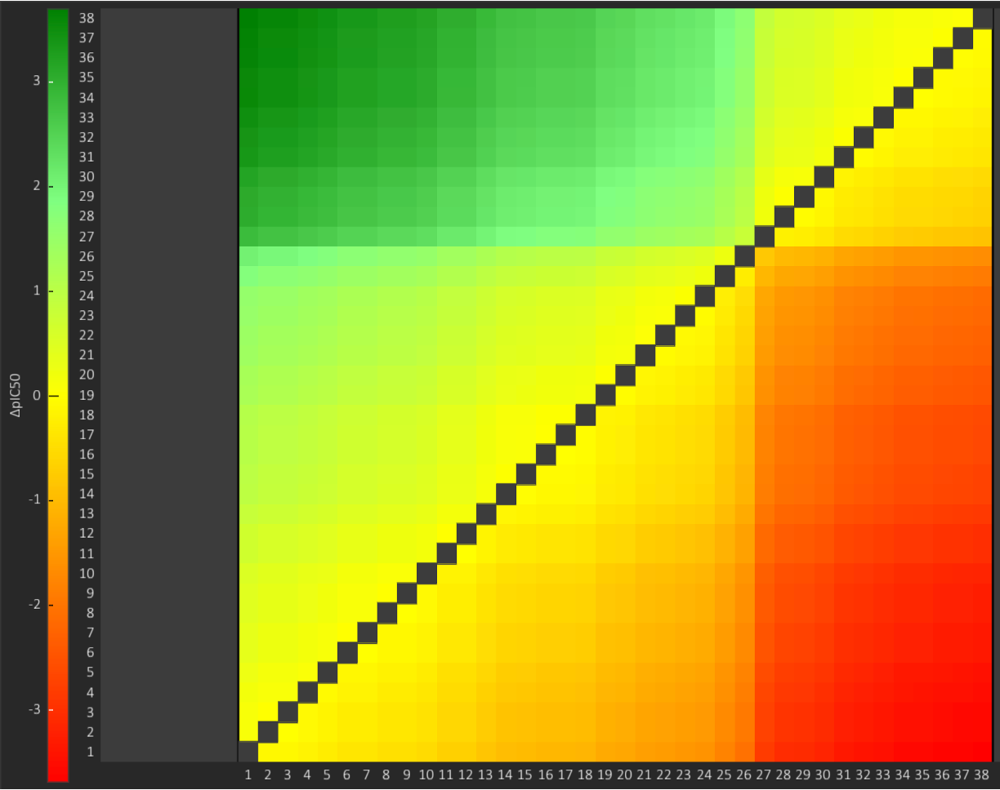
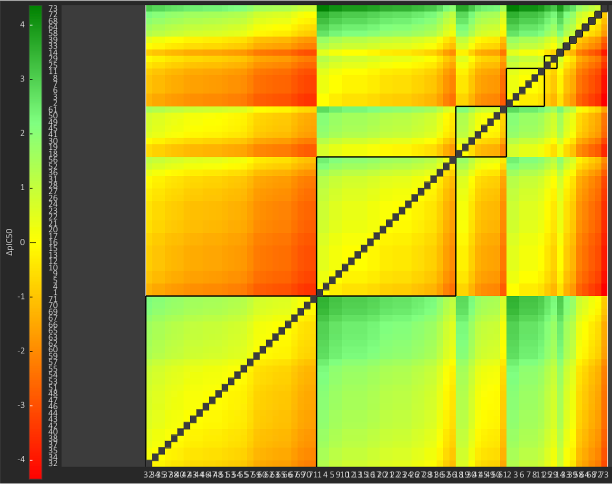
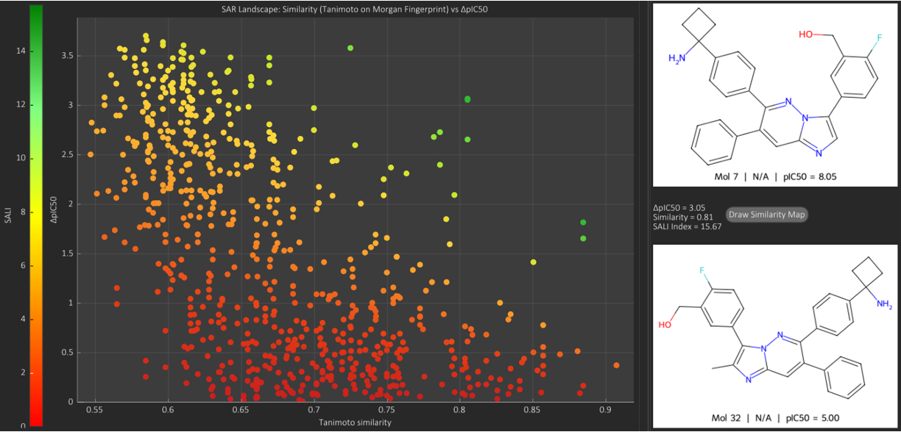

Similarity
The Similarity tab is organised into three sub-tabs,designed to highlight relationships between molecular similarity and bioactivity patterns: Similarity Matrix, Clustered Similarity Matrix, and Structure-Activity Landscape,
Similarity Matrix
This sub-tab displays a pairwise Tanimoto similarity matrix for all molecules belonging to a user-selected subset. Similarities are computed on Morgan fingerprints. The matrix is symmetric, and the diagonal corresponds to self-comparisons (similarity = 1.0).
Each cell is coloured according to its Tanimoto value, using a continuous colormap ranging from the minimum similarity observed in the subset to the maximum value (1.0). The colour scale is reported through a colormap bar positioned on the left of the matrix.
When a cell is selected, the two corresponding molecules are rendered on the left panel using RDKit fingerprint similarity maps, which highlight conserved regions in green and divergent regions in red.
By default, molecules are ordered by ascending identifier. If the option Sort by overall similarity is enabled, molecules are reordered by a global similarity score: for each molecule, SARgate computes the sum of its pairwise similarity values against all other molecules in the subset, then sorts molecules from the highest (most globally similar) to the lowest (most globally dissimilar).
Clustered Similarity Matrix
In this sub-tab, the user selects both a subset and an activity type, and defines a similarity threshold (%) used to cluster the molecules within the selected subset. Clusters represent groups of molecules whose mutual similarity values are above the specified threshold. The matrix is reordered by cluster membership, from the largest cluster to the smallest one, and clusters are visually delimited by a black outline.
In contrast to the standard similarity view, cell colours encode the activity difference between the molecule on the X axis and the molecule on the Y axis for the selected activity type. Whenever applicable, activity values are converted to a logarithmic scale prior to computing differences. The activity difference can be displayed as a signed or absolute quantity by enabling ΔActivity as absolute value. The corresponding ΔActivity value is represented by the colormap scale on the left and can be inspected by selecting a cell and comparing the activity annotations of the two molecules.
The option Read undefined includes molecules whose activity is reported with relational operators other than "=" (e.g., <, ≤, ≥, >). The option Read inactives includes molecules that are not annotated with the selected activity type.
Selecting a matrix cell renders the two corresponding molecules in the left panel. This representation supports the identification of activity cliffs within structurally similar clusters and helps highlight subtle structural changes associated with large bioactivity shifts.
Example Analysis

In the example above, the selected activity is IC50, therefore activity differences are expressed as ΔpIC50, and the similarity threshold is set to 70%. A single cluster is produced, indicating a high overall similarity across the dataset. Within this cluster, two clearly separated molecular groups are observed: Mol1–Mol26, showing higher ΔpIC50 values, and Mol27–Mol38, showing lower ΔpIC50 values (approximately 1–4 orders of magnitude smaller than the first group).

In the second example, the selected activity remains IC50 and the similarity threshold is set to 77%. Three clusters in particular, Cluster 2, Cluster 4, and Cluster 5, show higher ΔpIC50 values relative to the other clusters (especially Cluster 4), suggesting that they contain, on average, more active molecules. Conversely, Cluster 1 (the most populated cluster) displays generally lower ΔpIC50 values compared to the other clusters. This pattern may be especially informative, as it suggests that molecules in Cluster 1 share a structural feature that increases their mutual similarity while being associated with reduced biological potency.
Structure-Activity Landscape (SAL)
The Structure-Activity Landscape (SAL) plot enumerates all pairwise molecule comparisons within a selected subset and maps them into a 2D descriptor space defined by Tanimoto similarity versus ΔActivity. Similarity is computed on molecular fingerprints, while ΔActivity is expressed as an absolute difference in molecular activity (or transformed p-value for IC50-like endpoints).
Each point in the plot represents a unique molecule pair (i, j), characterized by a Structure-Activity Landscape Index (SALI), a value that is calculated as:
|Aᵢ - Aⱼ|
SALIᵢⱼ = ───────────
(1 - Sᵢⱼ)
where:
- A = molecular activity or transformed p-value (e.g., pIC50 for IC50-like endpoints).
- Sᵢⱼ = Tanimoto similarity between molecules i and j.
High-SALI points emerge in the upper-right region of the landscape, identifying molecule pairs that are both structurally similar and activity-divergent—indicative of activity cliffs or sharp SAR discontinuities. These points are color-mapped according to their SALI magnitude, enabling rapid prioritization of the most SAR-informative transformations.
Example Analysis

In the illustrated example, analysis was performed on subset 15 using Morgan fingerprints and IC50 activity. The highlighted pair differs only by a minimal substituent variation (H ↔ CH3), yet shows ΔpIC50 = 3.05, corresponding to a potency gap of >1000-fold despite a Tanimoto similarity of 0.81. This behavior typifies a pronounced activity cliff, where conservative structural edits induce extreme bioactivity shifts. Similar patterns within the same subset often reveal that H-for-CH₃ substitutions (or halogen-for-CH₃) significantly enhance potency at a low structural cost.